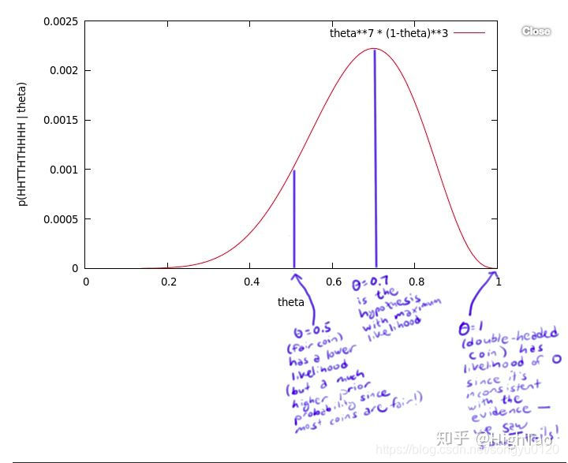

似然(likelihood)和NLLLoss
博主在学习的过程中，一直看到负对数似然函数(NLLLoss，negative log likelihood loss)，虽然知道怎么计算，但是一直不清楚为什么叫似然。今天通过学习对似然和机器学习模型训练有了全新的理解，故记录在此。
本文主要参考：似然（likelihood）和概率（probability）的区别与联系
1. 交叉熵(CrossEntropyLoss)和NLLLoss的联系
CrossEntropy的定义：
分类任务中总共有\(C\)个类，对于一个输入样本\(x\)，一个模型预测的概率分布为\(y=(y_1, y_2, \cdots y_C)\)，其中\(y_1+y_2+\cdots +y_C=1\)，\(y_i\)表示取到类别\(i\)的概率。如果\(x\)的真实类别是\(k\)，那么他的真实类别分布就是：\(t=(0,0,\cdots, 1, \cdots,0)\)，只有第\(k\)个类别对应的概率是1，其他的都是0。交叉熵的计算公式是：
\[ CE=-\sum_{i=1}^C t_i\log y_i \]
这里\(t_i\)是类别\(i\)的真实概率，而又因为真实概率只有一个是1，其他都是0，所有就可以简化为：
\[ CE=-\log y_k \]
在pytorch计算中，CrossEntropyLoss = softmax + log + NLLLoss
我的问题就来了
一般NLL被称为负对数似然，这样推算下来，对数是log，NLL就是从log_softmax的结果中找到正确概率并取了个负号，那只能是softmax是似然，为什么softmax被称为似然呢？softmax不是把模型输出转换为概率吗？怎么叫似然呢？
这里就引出了“似然”和“概率”的问题。
2. 似然是什么
最大似然是，给定一个观测值\(X\)，要找到分布的参数\(\theta\)的一个取值\(\theta_0\)，使得此时该分布中采样的结果是\(X\)的可能性最大。
在上面引用的文章中，就对这个有很好的解释，我直接引用过来
有一个硬币，它有\(\theta\)的概率会正面向上，有\(1-\theta\)的概率反面向上。\(\theta\)是存在的，但是你不知道它是多少。
为了获得\(\theta\)的值，你做了一个实验：将硬币抛10次，得到了一个正反序列：\(x = HHTTHTHHHH\) 。无论\(\theta\)的值是多少，这个序列的概率值为 \(\theta⋅\theta⋅(1-\theta)⋅(1-\theta)⋅\theta⋅(1-\theta)⋅\theta⋅\theta⋅\theta⋅\theta = \theta^7 (1-\theta)^3\)
比如，如果\(\theta\)值为0，则得到这个序列的概率值为0。如果\(\theta\)值为1/2，概率值为1/1024。但是，我们应该得到一个更大的概率值，所以我们尝试了所有θ可取的值，画出了下图:

这个曲线就是θ的似然函数，通过了解在某一假设下，已知数据发生的可能性，来评价哪一个假设更接近θ的真实值。
如图所示，最有可能的假设是在θ=0.7的时候取到。但是，你无须得出最终的结论θ=0.7。事实上，根据贝叶斯法则，0.7是一个不太可能的取值（如果你知道几乎所有的硬币都是均质的，那么这个实验并没有提供足够的证据来说服你，它是均质的）。但是，0.7却是最大似然估计的取值。因为这里仅仅试验了一次，得到的样本太少，所以最终求出的最大似然值偏差较大，如果经过多次试验，扩充样本空间，
则最终求得的最大似然估计将接近真实值0.5。
3. 深度学习模型和似然的关系
我们把语言模型视为一个分布，语言模型生成文字的过程就是从这个分布中采样的过程，模型的参数就是分布的参数，而你现在有的正常的训练用的语料就是观测值\(X\)，你希望找到一个最合适的\(\theta\)，使得模型生成\(X\)的概率最大，而这个概率，就是模型最后一层输出的logits再经过softmax后的结果。所以softmax后的结果又被称为似然，它表示的就是当前参数的似然函数，训练的目的就是通过调整自变量\(\theta\)，使得这个似然函数值最大。
而损失函数一般是越小越好，所以，给softmax后的结果又加了个log，并取负数。取log主要是对优化有点好处，让模型在似然函数值小的地方快速优化，而取负数可以把最大化变成最小化问题。